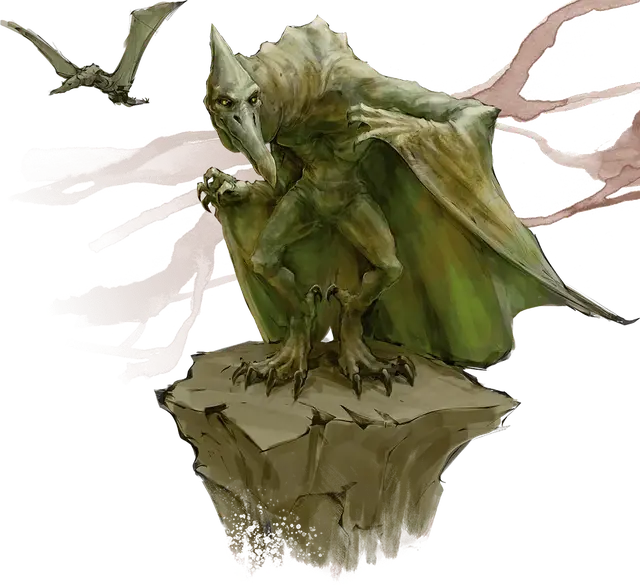

Птералюд
Pterafolk
Большой Монстр, нейтрально-злой

Класс Доспеха 12 (Природный доспех)
Хиты 26 (4к10 + 4)
Скорость 30 футов, летая 50 футов
| мод | спас | ||
|---|---|---|---|
| СИЛ | 15 | +2 | +2 |
| ЛОВ | 13 | +1 | +1 |
| ТЕЛ | 12 | +1 | +1 |
| мод | спас | ||
|---|---|---|---|
| ИНТ | 9 | −1 | −1 |
| МДР | 10 | +0 | +0 |
| ХАР | 11 | +0 | +0 |
Навыки Восприятие +2, Выживание +2
Чувства пассивное Восприятие 12
Языки Общий
Опасность 1 (200 опыта)
Бонус мастерства +2
Особенности
Ужасающее пикирование. . Если птералюд летает и пикирует как минимум на 30 футов по прямой к цели, а затем попадает по ней рукопашной атакой оружием, то цель становится испугана до конца своего следующего хода.
Действия
Мультиатака. Птералюд совершает три атаки: одну укусом и две когтями. В качестве альтернативы, он совершает две рукопашные атаки метательным копьём.
Укус. . Рукопашная атака оружием: +4 к попаданию, досягаемость 5 футов, одна цель. Попадание: 7 (2к4 + 2) колющего урона.
Когти. . Рукопашная атака оружием: +4 к попаданию, досягаемость 5 футов, одна цель. Попадание: 5 (1к6 + 2) рубящего урона.
Метательное копьё. . Рукопашная или дальнобойная атака оружием: +4 к попаданию, досягаемость 5 футов или дистанция 30/120 футов, одна цель. Попадание: 9 (2к6 + 2) колющего урона.
Описание
Птералюд – это 10-футовые, крылатые, рептилойдные , двуногие жители Чульта. Яростные изоляционисты, они рассматривают большинство других существ как своих врагов. В культуре чультов птералюдов часто называют «страхолюды» за их привычку падать с неба, чтобы урвать все, до чего они могут дотянуться, а затем унести сокровища и еду обратно в свои норы.
Птералюды имеют размах крыльев 20 футов и рожают живых молодых. Древние ритуалы когда-то давали птералюдам способность принимать форму птеранодонов и бескрылых людей ящериц, но эти ритуалы давно забыты.